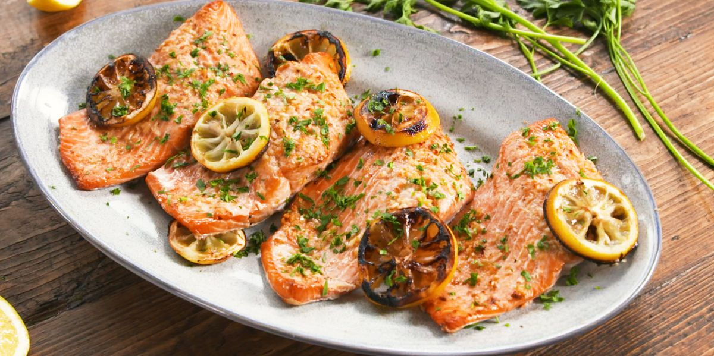

Sviestā cepts lasis

Garšīgāku lasi Jūs nebūsiet baudījuši!
Sastāvdaļas
- 2 šķēles cepšanai sagatavota laša (katra 200 g)
- 1/2 citrona sulas
- sāls
- malti baltie pipari
- 3 ēdamkarotes miltu
- 4 ēdamkarotes sviesta
Pagatavošana
- Lasi noskalo, nosusina, aprasina ar citrona sulu un ļauj ievilkties.
- Uzkaisa sāli un piparus.
- Šķēles apviļā miltos un cep apmēram 18 - 20 minūtes.
Izmantotā recepte